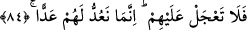

vesveselerle ve saptırmalarla onları isyana teşvik ediyorlar.
Maksad Rasûlullah (s.a.)’in kâfirlerin sözlerine, azgınlık içinde uzun süre
kalmalarına, sapıklığa dalmalarına ve inadda ileri gitmelerine hayret ettirmektir. Yine
âyette, hakîkat açığa çıktıktan sonra ona uyulacağında görüş birliği bulunduğuna,
kâfirlerin bütün bu davranışlarının şeytanların saptırması ve vesvesesiyle olduğuna,
yoksa az da olsa bunu câiz gösterecek bir şey bulunmadığına işâret vardır.
84. Onlar hakkında acele etme. Biz onların sürelerini doldurmalarını sayıyoruz.
“Onlar hakkında acele etme.” Yani onların işledikleri ağır suçlar gereğince helâk
edilip senin ve mü’minlerin onların şerlerinden kurtulması ve yeryüzünün onların
bozgunculuklarından temizlenmesi için acele etme! “Biz onların sürelerini
doldurmalarını” yani günlerini, ecellerini “sayıyoruz.” Onların helâk edilmeleri
husûsunda acele etme. Çünkü onları cezalandırmamız için onların belirli günleri ve
sayılı nefesleri kalmıştır.
İbn Abbas (r.anhümâ) bu âyeti okuduğu zaman ağlar ve şöyle derdi: “Allâh’ın
saymasının sonu; ruhunun çıkması, ailenden ayrılman ve mezarına girmendir.”
İbn Semmâk (r.h), Halife Me’mûn’un yanında bu âyeti okudu ve şöyle dedi:
“Nefesler sayılı olduğuna göre uzaması mümkün değil. (Sayılı olan) ne de çabuk
tükenir!”
Bir bedevî de şöyle demiş: “Saatlerin kestiği (azalttığı) bir ömürle ve âfetlere
(hastalıklara) maruz kalan bir bedenin selâmette olmasıyla nasıl sevinirsin?”
Allâme Zemahşerî demiştir ki: “Verilen müddette alıp verdiğin nefesi ve amel yapma
imkânını ganîmet bil. Mazeretleri ve bahâneleri anlatmayı bırak. Çünkü sen sınırlı bir
süre ve belirli bir ömür içindesin.”
Mansûr ölüm anında şöyle demiştir: “Âhireti bir uykuya sattık.”
Şeyh-i Ekber (k.s.) da şöyle demiştir: “Kim nefeslerini muhâfaza ederse, onun
hakkında nefesler saatlere dönüşür, hatta daha fazla olur. Vakti, saatler olan kimse
nefesleri kaçırır, vakti, günler olan saatleri kaçırır, vakti, cuma (hafta) olan günleri
kaçırır, vakti, aylar olan haftaları kaçırır, vakti, seneler olan ayları kaçırır, vakti, ömür
olan seneleri kaçırır. Ömrünü kaçıranın ise vakti olmaz ve himmeti de himmet
sayılmaz.”
Ömrünü zâyî eden kendine ağlasın!
Vakit, sahibinin huzûruna göre uzar ve kısalır. Öyle kimseler vardır ki vakti bir saat,
bir gün, bir cuma (hafta), bir ay ve ömründe bir defadır. İnsanlardan öyleleri vardır ki,